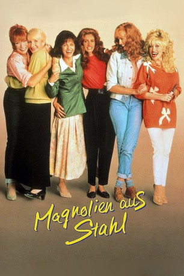
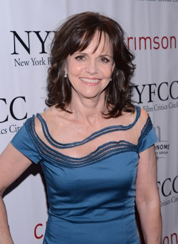
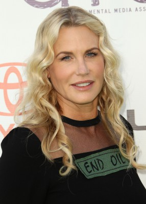
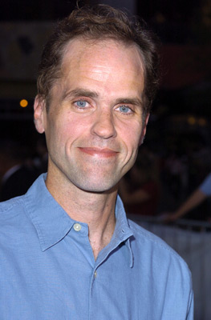

#6273 Magnolien aus Stahl
Alternativ: Steel Magnolias
Auszeichnungen: für 1 Oscars nominiert 1 GoldenGlobes gewonnen
 
 IMDB-Wertung: 7.2 / 10
IMDB-Wertung: 7.2 / 10  Metascore: 0
Metascore: 0 
Truvys Schönheitssalon in Chinquapin, Louisiana ist Woche für Woche das Klatschzentrum des Ortes. M'Lynn läßt sich zur bevorstehenden Hochzeit ihrer Tochter Shelby die Haare richten, die schicke Bürgermeisterwitwe Claire kehrt dort ebenso ein wie die schrullige Ouiser. Bei der Nagelbettreinigung tauschen die Frauen ihre Geheimnisse aus. Als die schwerkranke Diabetikerin Shelby trotz der Warnungen ihres Arztes ein Baby will, bekommt sie von den Freundinnen Beistand und Rat. Doch die Geburt ist folgenschwer und Shelby erkrankt tödlich. In den Zeiten der Not halten die Frauen zusammen und helfen der Mutter mit dem schweren Verlust fertig zu werden.
Jahr: 1989
Dauer: 118 Minuten
FSK: 12
Land: USA Studio: TriStar PicturesTonspuren: DD2.0 - ,
Untertitel: Deutsch,
Auflösung: 1080p (1920x1040) Größe: 8949 MB
Genre: Drama, Komödie, Liebe
Regisseur:  Herbert Ross
Herbert Ross
Drehbuch: Ali Adler
Soundtrack:
Darsteller:
-  Sally Field als M'Lynn Eatenton
- Dolly Parton als Truvy Jones
 Shirley MacLaine als Ouiser Boudreaux
Shirley MacLaine als Ouiser Boudreaux-  Daryl Hannah als Annelle Dupuy Desoto
 Olympia Dukakis als Clairee Belcher
Olympia Dukakis als Clairee Belcher Julia Roberts als Shelby Eatenton Latcherie
Julia Roberts als Shelby Eatenton Latcherie Tom Skerritt als Drum Eatenton
Tom Skerritt als Drum Eatenton Sam Shepard als Spud Jones
Sam Shepard als Spud Jones Dylan McDermott als Jackson Latcherie
Dylan McDermott als Jackson Latcherie-  Kevin J. O'Connor als Sammy Desoto
- Bill McCutcheon als Owen Jenkins
- Ann Wedgeworth als Aunt Fern
- Jonathan Ward als Jonathan Eatenton
- Bibi Besch als Belle Marmillion
- Janine Turner als Nancy Beth Marmillion
- James Wlcek als Marshall Marmillion
- Nancy Parsons als Janice Van Meter
- Rick Hurst als Bark Boone
- Robert Harling als Minister
 Carol Sutton als Nurse Pam
Carol Sutton als Nurse Pam- Knowl Johnson als Tommy Eatenton
- Ronald Young als Drew Marmillion
- Robert Ginnaven als Mayor Van Meter
- Tom Hodges als Louie Jones
- C. Houser als Jack Jr. - 1 Year Old
- Daniel Camp als Jack Jr. - 3 Years Old
- Norman Fletcher als Mr. Latcherie Sr.
- Lori Tate als Mrs. Latcherie Sr.
- Robert Adams als Dr. Judd
- Aja Sansone als Monique
- Rodney Alan Fulton als Bobby Ray Ross
- Spencer Henderson als Dancing Couple
- Sandra Asbury-Johnson als Dancing Couple
- Gale J. Odom als Church Singer
- Betsy Widhalm als Church Organist
- Oscar J. Bienvenu Jr. als Doctor
- Teresa Beaudion als Receptionist
- Gladys Mallard als Nurse
- Betty J. Dove als Nurse
- Travis Harrison als Delivery Boy
- James Shapkoff III als Delivery Man
- Walker May als Newspaper Boy
- Robert R. Morgan als Cook
- Roger D. McCann als Cook's Helper
Datei: X:\1989\Magnolien aus Stahl (1989, FSK12, 1920x1040).mkv seit 24.05.2017
Festplatte: HD 1987-1991
 Es gibt insgesamt 54 Filme in der Gruppe '1989'
Es gibt insgesamt 54 Filme in der Gruppe '1989'